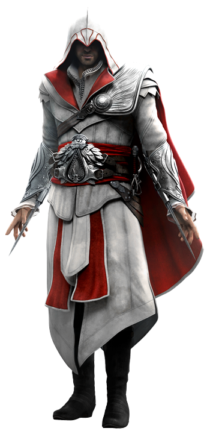
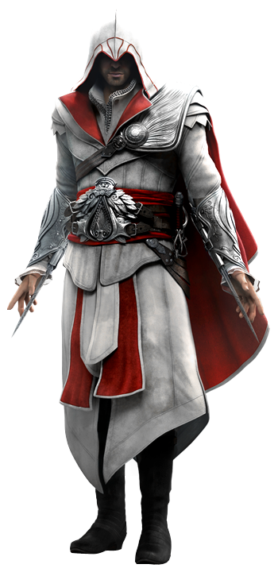

About
Ezio Auditore da Firenze
Ezio Auditore da Firenze (1459 – 1524) was a Florentine nobleman during the Renaissance, and, unbeknownst to most historians and philosophers, a Master Assassin and the Mentor of the Italian Brotherhood of Assassins, a title which he held from 1503 to 1513. H e is also an ancestor of William and Desmond Miles, as well as Clay Kaczmarek.
Biographical information
- Born
- 24 June 1459 Florence, Republic of Florence
- Died
- 30 November 1524 (aged 65) Florence, Republic of Florence
- Species
- Human
Political information
- Affiliations
- House of Auditore
- Assassins (1476 until death)
- Italian Brotherhood (1476 until death)
- Spanish Brotherhood
- Ottoman Brotherhood (1511-1513)
- House of Medici (1478-1492)
Gallery
 

Skills
- Eagle Sense
- Master Assassin
- Peak Human Conditioning
- Superior Strength
- Superior Mobility
- Superior Durability
- Superior Stamina
- Superior Metabolism
- Master Martial Arts
- Gadgetry
- Expert Marksmanship
- Expert Spy
- Escape Artist
- Expert Acrobat
- Master Swordmanship
- Peak Human Conditioning
- Leadership
- Apple of Eden
- Mind Control
- Illusion Generation
- Nexus Access
Experience
| Period | Place | Description | Photos | YouTube |
|---|---|---|---|---|
| 1459 - unknown | Firenze |
Early lifeEzio was born in Firenze on 24 June 1459, as the second eldest child of Giovanni and Maria Auditore. Although he appeared to be stillborn at first, he began crying after some words of encouragement from his father. Giovanni remarked on the boy's "fine set of lungs" before proudly raising him in the air, naming him Ezio Auditore da Firenze. |
Ezio obtaining the scar on his lip | |
| unknown - unknown | Italy |
Foray into vengeancePaola agreed to assist Ezio in his quest for vengeance, teaching him how to survive in the city as an outlaw through pickpocketing and blending in crowds. She further directed Ezio to Leonardo da Vinci to repair Giovanni's Hidden Blade, though she did not notice that Ezio was being watched. |
 Mario throwing a sword to Ezio
Mario throwing a sword to Ezio
|
|
| unknown - unknown | Italy |
Pazzi conspiracyFollowing Vieri's death, Ezio returned to Florence in April 1478 to gather information on a conspiracy against the Medici, who had been family friends to the Auditore. However, Ezio chose to visit Cristina first. She was quite surprised to see him but admitted in distress that she had been betrothed as she had thought she would never see him again. |
Ezio visiting Cristina | |
| unknown - unknown | Venice |
Hunt in VeniceEzio's encounter with Rodrigo Borgia and his Venetian associate distressed him greatly as he had hoped that he might lay his vengeance to rest with the death of Jacopo. Instead, he returned to Lorenzo in 1480, declaring his success in Tuscany, but that he needed to continue his quest for revenge in Venice. |
Ezio meeting Leonardo in the Apennine Mountains | |
| unknown - unknown | Italy |
Initiation into the Assassin OrderTwo more years passed before word of the Templar's vessel reached Ezio once again on his twenty-ninth birthday. That day, Rosa brought him a shipping manifest detailing the return of the ship. Leonardo approached Ezio, explaining that he had discovered that all the Codex pages put together a message that read "the Prophet will appear when the second piece is brought to the floating city". |
Ezio's friends revealing themselves as Assassins |
Contact
- Phone: doesn't have a phone number
- Email:ezio_auditore_da_firenze@gmail.com
-
Visit us at:
VillaAuditore.com
Monteriggioni, Tuscany
Italy - Facebook: Ezio Auditore